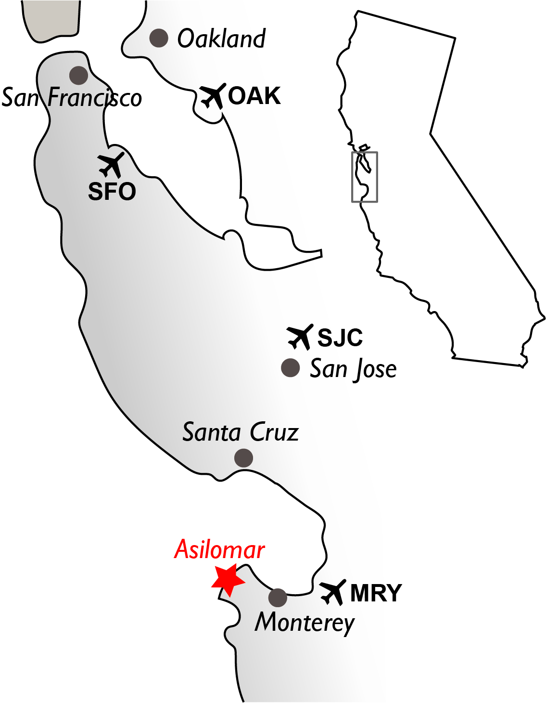

Getting to Asilomar (Pacific Grove, CA)
The Asilomar Conference Grounds are situated right on the Pacific Ocean, on the spectacular Central California coast, easily accessible from the San Francisco Bay Area, including 3 international airports and the local Monterey airport.
Please follow this link for further information regarding Driving Directions, Airport Transportation, Public Transportation, Limousine Service, and Car rental:
